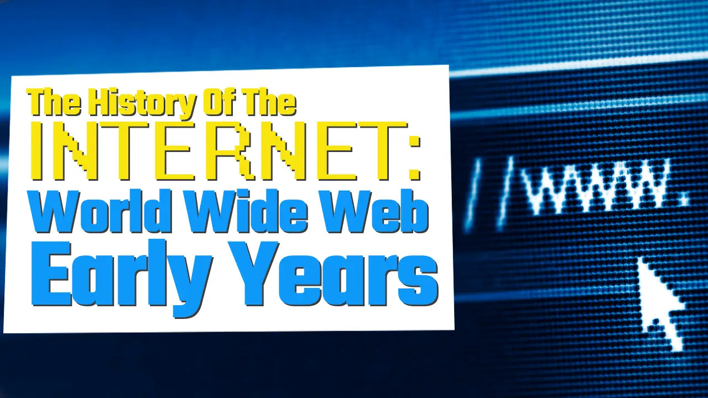

A very brief history of the internet begins with ARPANET in 1969, which initially connected four universities' computers to each other. It grew and developed into what we recognize as the internet today, which became available for public access in 1991.
Licklider went on to become the first director of the Defense Advanced Research Projects Agency (DARPA), an arm of the U.S. Department of Defense and the body that funded and coordinated the original research into what became the Internet.
The internet was invented through the work of many people, not just one. Some of the key figures were Lawrence Roberts, who proposed and led ARPANET for many years, and Tim Berners-Lee, who invented the World Wide Web.
